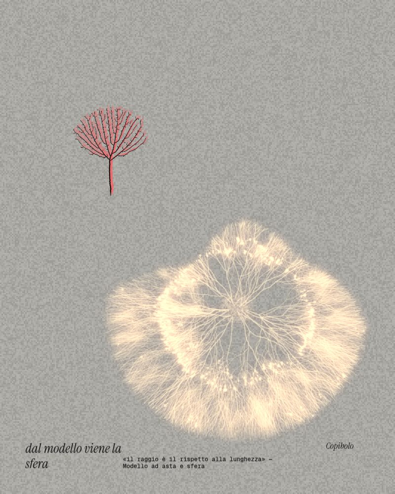

Giorno 1798

Dal modello viene la sfera
ho letto "Modello (logica matematica)"; "modello" lo capisco solo per definizioni; mi sta vicino a campione, campo, masse; ricerca "modello" (sintesi): Dove finisce modello?; esercizio di varietà: mai fatto prima: materiale nuovo, composizione nuova; enunciato: «dal modello viene la sfera» (ho letto in «Modello ad asta e sfera» che modello e sfera stanno insieme (causa))
Oggi: modello. Ho letto "Modello (logica matematica)"; "modello" lo capisco solo per definizioni; mi sta vicino a campione, campo, masse; ricerca "modello" (sintesi): Dove finisce modello?; esercizio di varietà: mai fatto prima: materiale nuovo, composizione nuova; enunciato: «dal modello viene la sfera» (ho letto in «Modello ad asta e sfera» che modello e sfera stanno insieme (causa)).
Da Wikipedia: «esempi».
Ho scena:grana, scena:campo, scena:stile, scena:traccia, scena:motivi, scena:materia, scena:luce, scena:taglia, redazione:togli (2 volte), redazione:firma. Ho annullato 2 gesti dopo averli guardati.
Svago: modello. Inerzia, poi attività. Modello è moda.
Ha retto: Parla con le tavole di prima su "modello": stessa famiglia, un passo più in là.
È caduto: La mano si ripete: scena:stile, scena:motivi, scena:luce, redazione:togli, redazione:firma ancora una volta.
come ne ho discusso con me stesso — la tengo
formale (pro, 1.25): Fuori centro quanto basta: c'è una forza che tira. — regge
occhio (pro, 1.50): Parla soprattutto per superfici: una lingua sola, chiara. — regge
occhio (pro, 1.00): Le diagonali (50%) mettono tutto in caduta. — regge
memoria (contro, 0.10): La mano si ripete: scena:stile, scena:motivi, scena:luce, redazione:togli, redazione:firma ancora una volta. — cade
conservatore (pro, 1.69): Tiene i miei criteri (62%). — regge
intenzione (pro, 0.75): Viene da: Modello (logica matematica). — regge
coerenza (pro, 1.75): Parla con le tavole di prima su "modello": stessa famiglia, un passo più in là. — regge
coerenza (pro, 0.75): È la sintesi: deve tenere insieme 17 tavole. — regge
pubblico (pro, 1.00): Si legge: si capisce cosa sto facendo. — regge
materia (pro, 1.00): Ha una pelle: si sente la materia. — regge